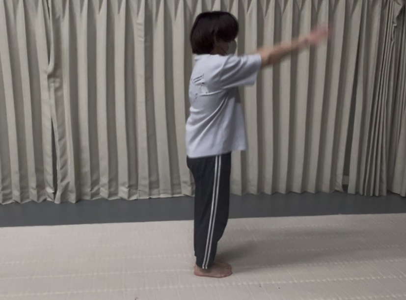
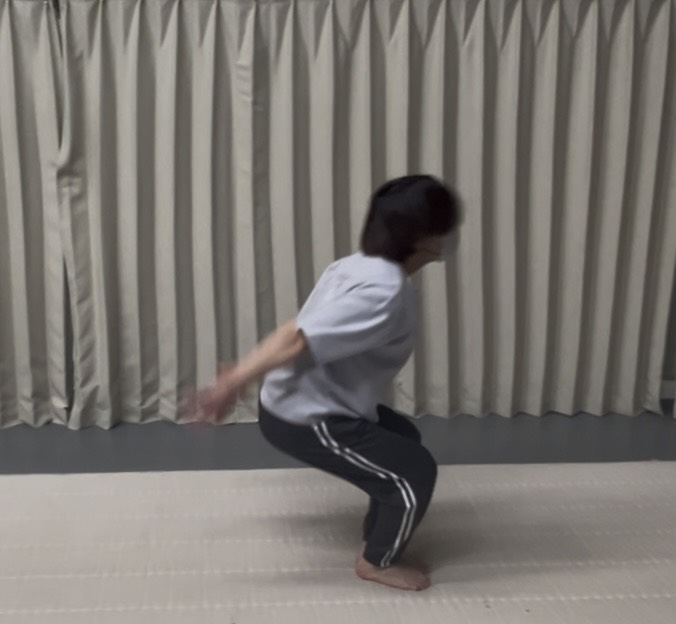
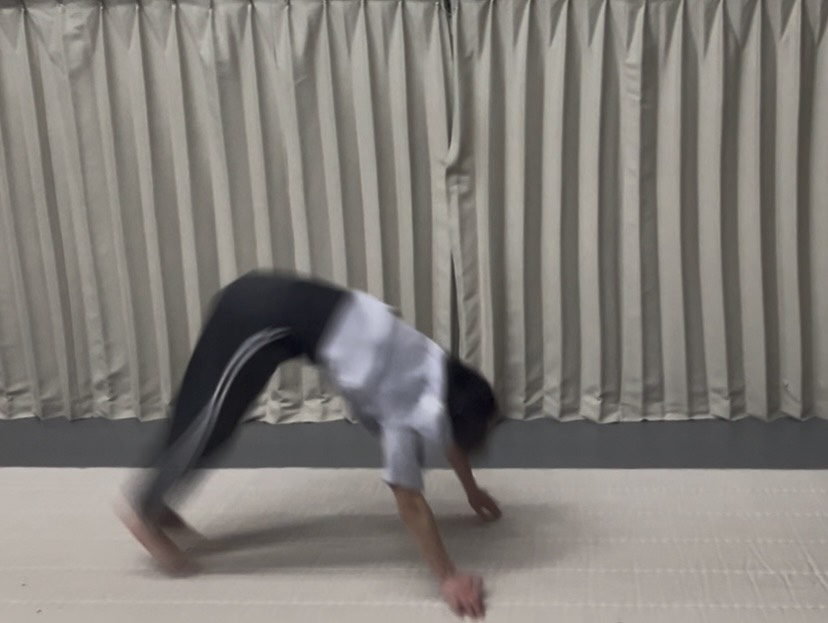
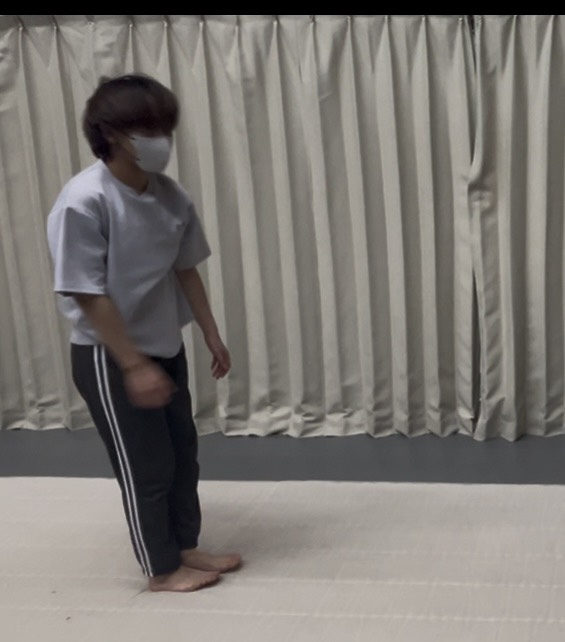
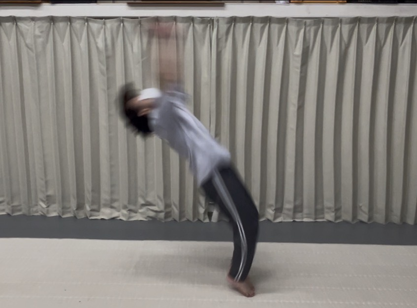
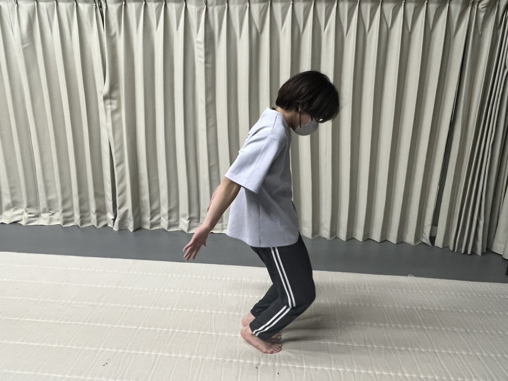

STEP 1
バク転とは
完成形と導入を学ぶ
このステップの目標
バク転の正しい形を理解し、手順1～3をマスターする。
バク転（完成形）
バク転の手順
手順１

手順２

手順３

手順４

手順５

手順６

手順７

実際に手順1～３をやってみましょう
手順１

手順２

膝が前に出ないようにしましょう 手順３

手の間を見ながらジャンプしましょう
ポイント
STEP1では完成形のイメージを頭の中で作ることが目的です。要素分解のセクションの注意点をよく頭に入れておいてください。
また、手順1～３は一番大切といっても過言ではないほど重要な要素なので、鏡や動画などで自分の姿を確認しながらお手本に近づけていきましょう。
よくある失敗
○ 良い例

× 悪い例

膝が前に出ている
注意
手順1～3では危険はないですが、それだけに甘く見てしまう人が非常に多いです。自分が悪い例に当てはまっていないかをよく確認したうえで正しい動きを慣れるまで体に叩き込んでください。
チェックリスト
- バク転の手順が頭に入っている
- 手順1～3を覚えた
- 手順1～3の正しい動きが自然にできる